#expectations
I went to the We Are Playgrounds event with school today! At first, I was pretty nervous...
Most of you know I'm not a big fan of travelling, nor do I handle big crowds very well. And sitting through lectures...
Eugh. However, I was excited about the guests that would be attending!
#experience
My love for art made me able to go (despite my anxiety), and I hoped I could learn a lot - which I did!!
I already knew a lot about the art-related things, but I feel like it was a good step for me socially.
I spoke to Feefal (I've loved her work for many years!) and got her art book, which she signed!
Absolutely one of my prized possessions now.
I wish I could have attended Aaron Blaise's panel, but I couldn't, since his panel was rather late.
I watched a lot of Brother Bear as a child, and it inspires me to this day.
I hung out with friends as we made our way through the event.
It felt like the other conventions I've been to, giving me a comforting sense of familiarity.
I was blown away by the amazing art they had on display, and I bought some very cute stuff at the artist alley <3
Support small businesses!
I left in the afternoon after feeling overstimulated.
#reflection
I had seen most of the event and didn't feel like sticking around for the later panels.
It was a very fun day though, I hope to go again next year <3 I bet they have amazing artists then as well!
post paco here
my baby boi
i love my dog
super swag blog moment
i wanna play repo
Hey ho! I’m Mint! However, people have also started calling me “ishy”, which sounds cute, so I’ll gladly take that.
I’m an artist that streams on twitch every once in a blue moon and goes live on insta every once in an ever-so-slightly-less-blue moon.
I have a bunch of OCs that I’m always looking to develop by taking inspiration from anything.
A cool song? I’ll turn it into a character! A color? Sure, gimme! The ground underneath you? Watch out, it might already be breathing.
Besides my OCs, I’m also interested in games!
Nintendo and indie games are my favs, especially Undertale/Deltarune, OMORI and the Zelda, Mario, MOTHER and Splatoon franchises.
But also more "frightning" games, such as Phasmophobia, Lethal Company and R.E.P.O.
I find it incredibly fun to tackle these games with my friends!
Watching videos about creepy stuff also suits my tastes. What’s better than getting scared on a calm sunday morning!?
Oh, and music! You won’t ever see me not listening to something. Vocaloid, game OSTs-
Ah, I’m getting a bit off track… We’re talking about my work! Apologies.
My favorite thing to do in my art is make it look as colorful as possible while not being straining to the eyes. Looking at the games I mentioned, I don’t think that’s too much of a surprise. (Hey, that rhymes!)
However, somewhere, I also wish I could have a creepy, cool art style. But on the other hand… I love cute stuff..!
What a hard life.
I could talk on and on about stuff that doesn’t even matter, hm…
I should cut it off right here. Thanks for reading!~
For our study, we have to show that we meet the requirements for certain learning outcomes.
They're basically goals. I'll explain all five individually and show how I meet the requirements.
The full description of this learning outcome provided by Fontys is:
"You orient in the relevant tech, media and design landscape and create interactive media products that you have tested with users and stakeholders."
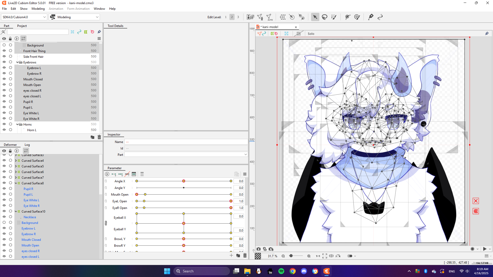
VTube model:
I have created a VTube model for somebody else as part of an art trade. They made me multiple pieces of art in return for one VTube model. (Image 1) Once I had confirmation of the static avatar being correct, I continued with rigging the model. (Image 2)
Once that was done, I only had to add physics to the model. (Image 3) As you can see, the model follows my face. When I look left, the model looks left. When I open my mouth, the model opens its mouth. It's responsive to my expressions.
There are limits to the movements I was able to rig, as the free version of Live2D has a limit to the amount of parameters you can use to rig movements with. If I were to have the licensed version, I would have been able to rig a lot more movements, for example side tilts and different mouth shapes. (Image 4)Here is an extra image of all the meshes I had to work with. Luckily, Live2D offers an option to have the mesh generated for you. It saves you a lot of time.
Of course, I made sure to give them a guide so they don't struggle too much with getting it to work. Looking back at the guide, I feel like I could have been more clear, telling the user where to download the program and specifying "this file", which was the attached model file.(Image 5)
Honestly, I found it very fun to learn Live2D. I was inspired by VTubers and found a simple tutorial on YouTube that I followed. It was very difficult at first, but the longer I worked with the program, the more I got the hang of it. I've made models for myself which I used in my Twitch streams. My viewers loved them.
Now, I've reached a point where people are interested in my models and I have even been commissioned for one. I haven't been able to make a new model lately due to lack of time.
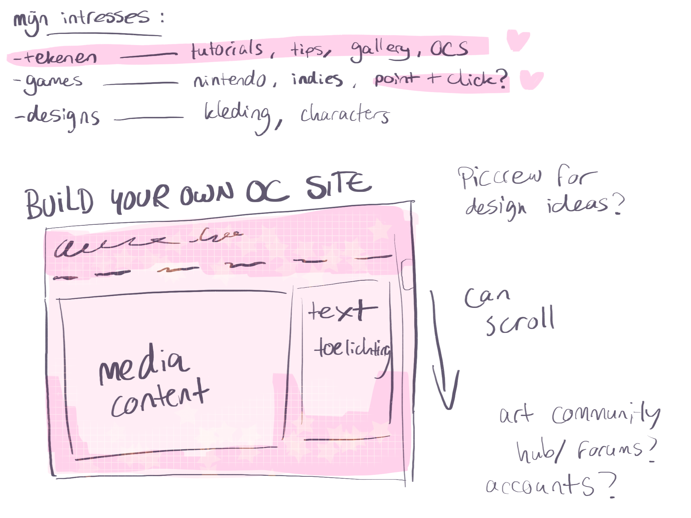
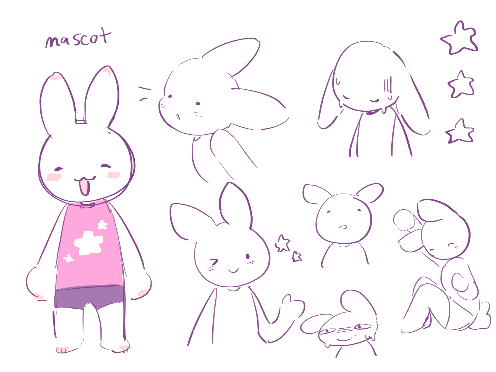
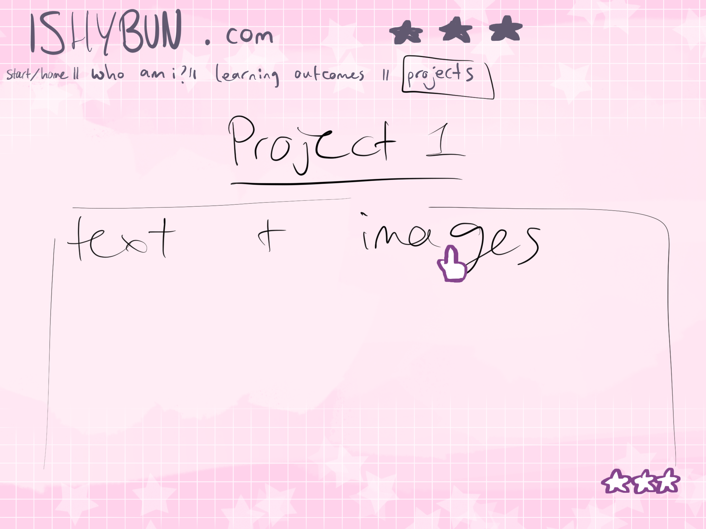
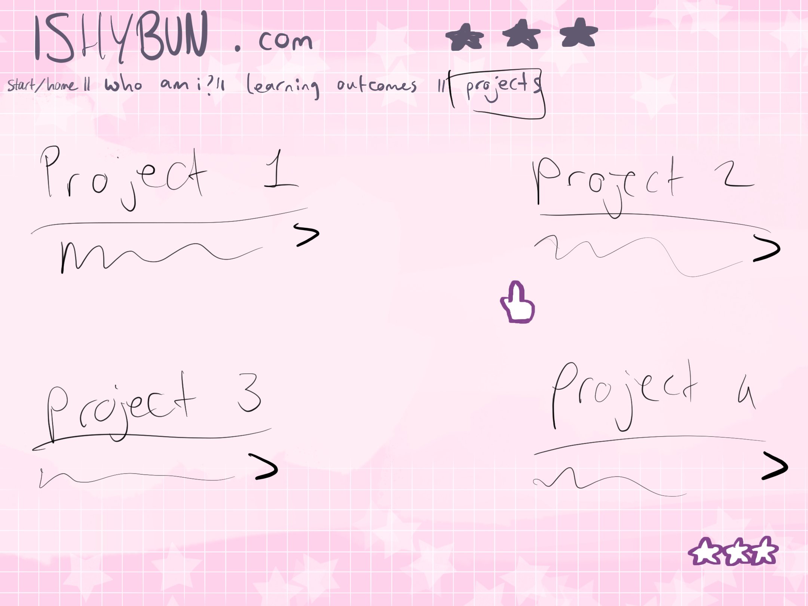
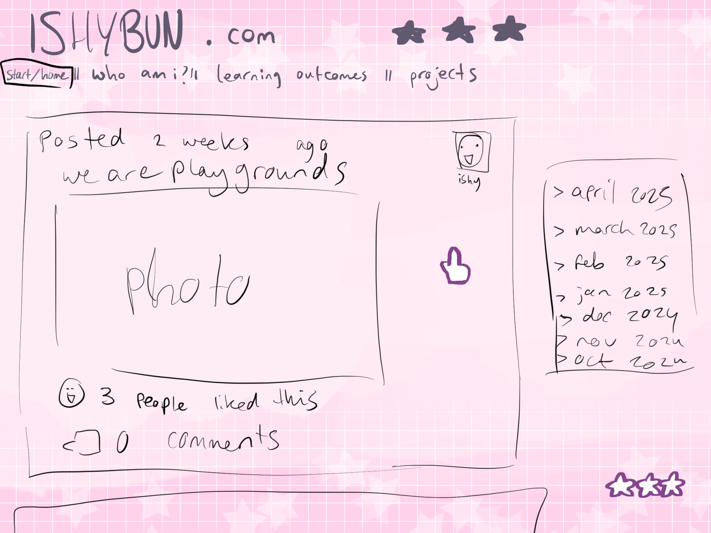
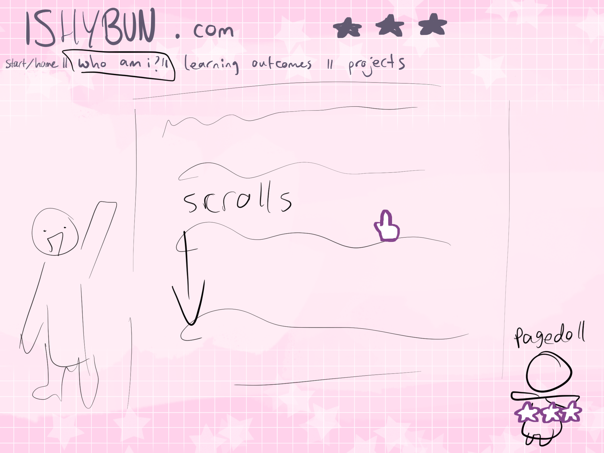
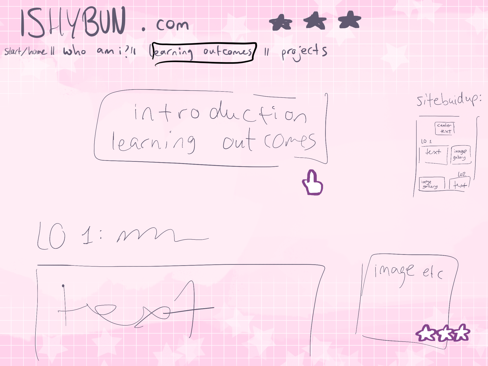
This site:
Secondly, this entire site also serves as an example of interactive media. I love trying to incorporate as many fun things as I can.
Of course, this site was not created to be like this right off the bat. The initial idea stems from semester 1, where the site was supposed to help users create their own fictional characters. Image 6 shows the very first idea.
We were assigned to create a site based on our interests, which I listed above in the image.
I even created a little bunny mascot for the site, seen in image 7. Since I revamped the site to be focused on myself, I had no need for a site mascot/helper character anymore, and so the bunny was scrapped.
In semester 2, we needed to create portfolio sites. I had no idea what to go for and remembered the site idea I had in semester 1. I looked it up once more and looked at the possibilities of changing the intent of the site.
I figured it could definitely work as a cute portfolio site with some changes and edits, so I got to work and created new wireframes.
(Image 8)(Image 9)(Image 10)(Image 11)(Image 12)
I've been finding myself really enjoying working on this site. I put on some music, I get comfortable, and I get to work for hours at a time. I've rarely every been so motivated to work on a school project. It feels good.
The full description of this learning outcome provided by Fontys is:
"You explore front-end development languages, you write code and document in a version control environment."
Using Git:
I'm learning how to use Git. I've never understood it before, but I'm slowly beginning to get the gist of it.
I have continuously uploaded my versions to a repository. (Image 1)(Image 2)
I've only ever used Git before I started this study to leave a single comment on a thread. During semester 1, we needed to work with Git to keep track of our process. I let my team handle all of that, since I had no clue how to navigate it.
Needless to say, I'm glad I'm beginning to understand the Git environment. I know how to commit and push. That's quite some progress for me. I expect to become better with it as time goes on and the more I use it.
Coding:
Here are a few code snippets for this website. I used HTML (Image 3)
, CSS (Image 4)
, and JavaScript (Image 5).
For CSS and JavaScript I used W3Schools as reference. At one point I couldn't get the JavaScript to work as I wanted it to, so I asked ChatGPT for help.
I'm happy with the amount of progress I'm making with learning coding. I never imagined I would be able to create a site like this, but I'm seeing more and more possibilities that might even be within reach for me.
I'm having a lot of fun learning and creating. I'm actually understanding what I'm doing (most of the time). It can be frustrating sometimes, but thankfully there are more than enough resources online, teachers available and friends I can ask for help.
Feel free to inspect the site to see more code.
The full description of this learning outcome provided by Fontys is:
"You explore and use professional design tools and you iteratively design visual works."
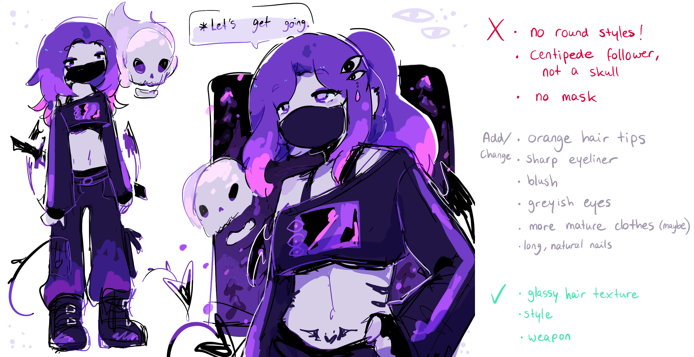
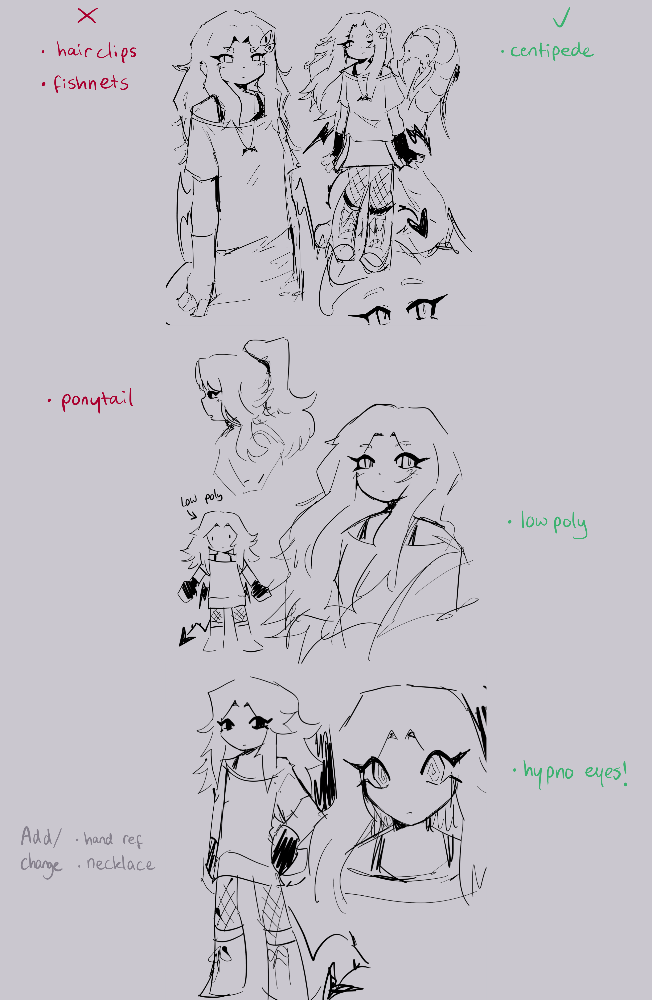
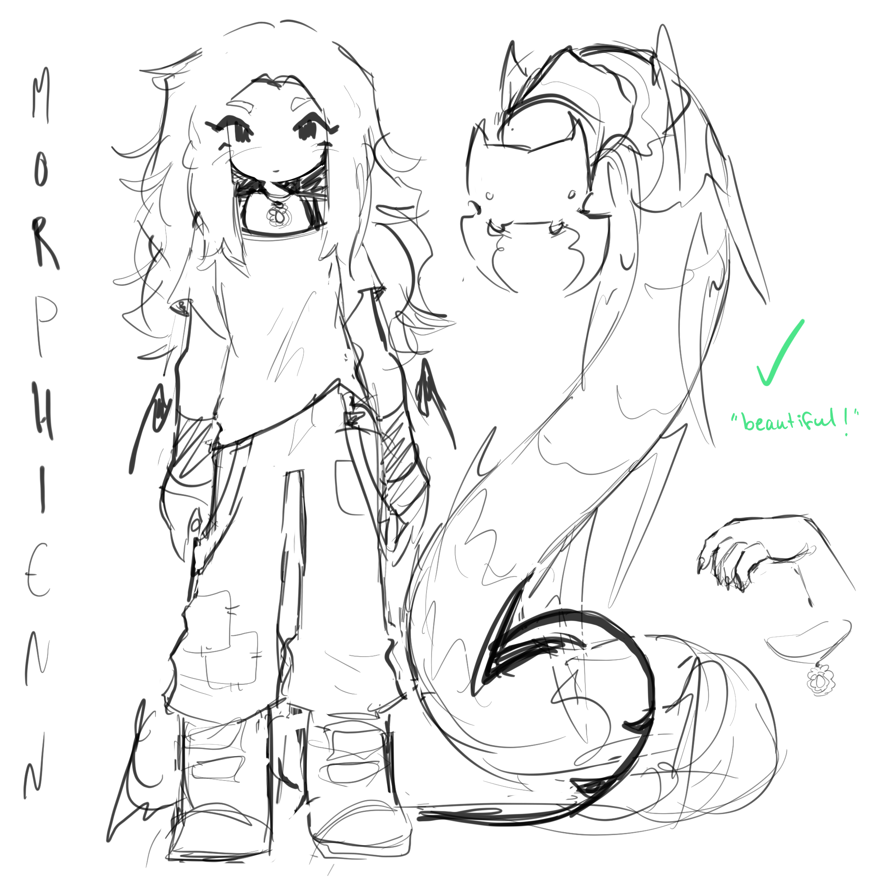
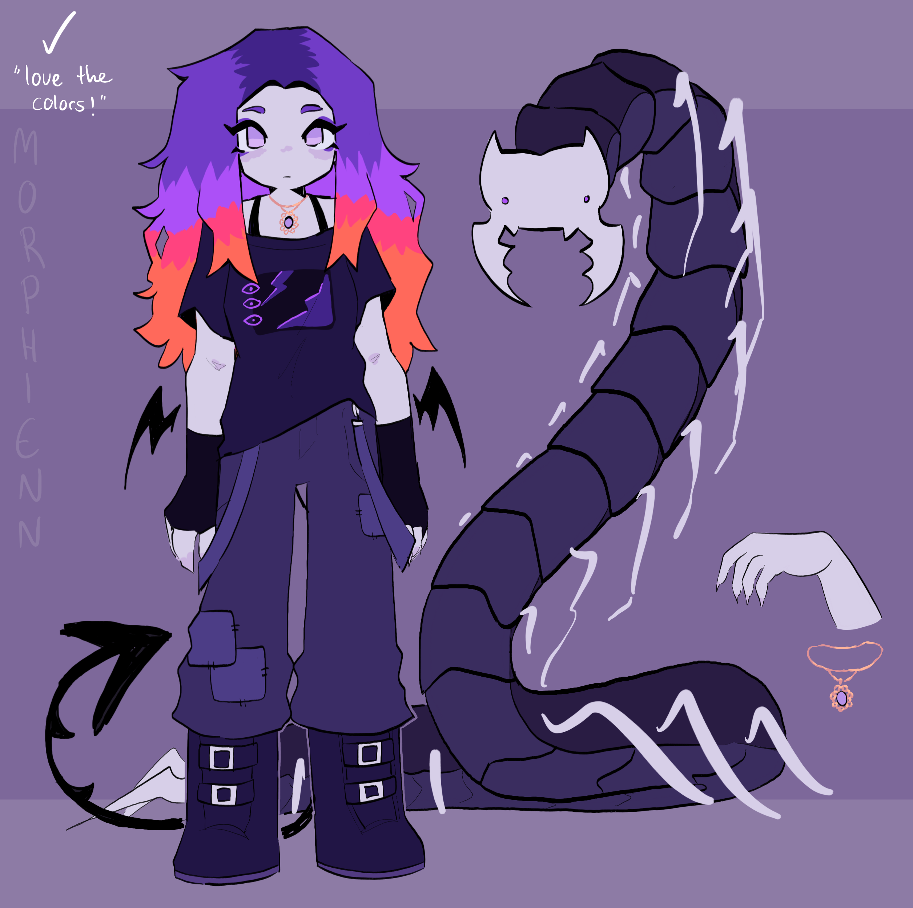
Morphienn's persona:
For a project in semester 2, we got to work with a client from the Rock Academy. Our client was Morphienn, a young woman who loved mysterious and dark vibes.
Morphienn wanted a character design that she could use for her branding. She wanted this character to be based on herself and wants to portray herself through the character.
I looked through her social media profiles and through the Pinterest moodboard she created for her own branding, leading to creating image 1.
On the side of the image, I wrote her feedback down in bullet points. There are parts she wanted to be removed, possible edits/additions and also things she really liked.
I created new sketches where I implemented her feedback. Take a look at image 2, where the feedback is once again written on the side.
I once again used this feedback and began working on the final design. I made a sketch and showed it to Morphienn, who saw nothing that needed to change. Her only feedback was that it was beautiful. Please see image 3.
I finished the sketch and had it approved by Morphienn. Please look at image 4. She loved the colors and requested no further changes.
It was wonderful to work for Morphienn and I had no trouble using her feedback to go forward with. One thing that was a bit more difficult was a last minute request to add orange hair tips. It clashes with the purple, but in a way, it also looks nice..?
Personally, I wouldn't have gone for something like that, but Morphienn loved it, so I'll give it the benefit of the doubt.
The full description of this learning outcome provided by Fontys is:
"You apply professional practice, both individually and in teams, in the areas of project organisation, communication with stakeholders, exploratory research, and reporting."
Communication with Morphienn:
Please click the images to see them in full size.
I communicated clearly with the client, Morphienn. We navigated together in order to find the perfect persona for her.
She sent me sources of inspiration which I was able to use throughout the process, which really helped me create the product she wished for.
Morphienn was a wonderful client and I loved working with her. I've rarely ever had bad experiences with clients, but still, I felt her love for the project through her words. She was motivated, and so was I.
User testing:
As a group, we have carried out a user test, using a prototype of our website.
We conducted it on an individual named "Chris". He was shy and awkward, and very much into anime. I asked Chris to navigate towards various portions of the site, which he did with ease.
However, he didn't say much and stayed rather silent. I tried to get him to open up by asking questions about his hobbies and interests, which eventually taught us he has an interest in Japan. By himself, he navigated to a section with a Japanese school.
I learned that it's important to understand your user and make them feel comfortable. You may get difficult testers, but their feedback is still valuable.
We took notes as it went on. (Image 1)
Planning:
Here is a snippet of our group planning. (Image 2)
Truth be told, we did not follow it up very well. Due to motivational issues, we lacked behind and eventually forgot about it. Personally, I think it's important to have plannings, or at least a Trello board that you actually use.
For my own commissions, I love tracking my progress through Trello. However, for group projects, I have not found that it actually works well. We collectively forget to use it. It's a shame, honestly.
Target audience questionnaire:
As a group, we carried out research to find out who our target audience is.
We created a form for others to fill in. The data of this form was used for our project. Click here for the questionnaire.(Image 3)
Unfortunately, this also did not end up to be very useful to us. We received only two responses, which isn't enough to confidently base your statistics on.
The full description of this learning outcome provided by Fontys is:
"You take the initiative in asking for, and reflecting on, feedback. You identify your own core values as the basis for your study career and professional development."
Feedpulse:
I have continuously asked for feedback from the teachers throughout the semester.
During these moments I have talked about my progress and my plans.
I reflected on what I've done so far and what I can do better going forward. I've really begun to grasp why feedback is crucial to learning and bettering your work.
At first, I was a bit intimidated by the idea of asking feedback, but now I'm eager to get more feedback whenever I can. I love seeing outsider's perspectives and learning how my work is perceived.
It's incredibly useful to hear advice from professionals and take it with you on your learning journey.(Image 1)
We Are Playgrounds:
#expectations
I went to the We Are Playgrounds event with school today! At first, I was pretty nervous...
Most of you know I'm not a big fan of travelling, nor do I handle big crowds very well. And sitting through lectures...
Eugh. However, I was excited about the guests that would be attending!
#experience
My love for art made me able to go (despite my anxiety), and I hoped I could learn a lot - which I did!!
I already knew a lot about the art-related things, but I feel like it was a good step for me socially.
I spoke to Feefal (I've loved her work for many years!) and got her art book, which she signed!
Absolutely one of my prized possessions now.
I wish I could have attended Aaron Blaise's panel, but I couldn't, since his panel was rather late.
I watched a lot of Brother Bear as a child, and it inspires me to this day.
I hung out with friends as we made our way through the event.
It felt like the other conventions I've been to, giving me a comforting sense of familiarity.
I was blown away by the amazing art they had on display, and I bought some very cute stuff at the artist alley <3
Support small businesses!
I left in the afternoon after feeling overstimulated.
#reflection
I had seen most of the event and didn't feel like sticking around for the later panels.
It was a very fun day though, I hope to go again next year <3 I bet they have amazing artists then as well!
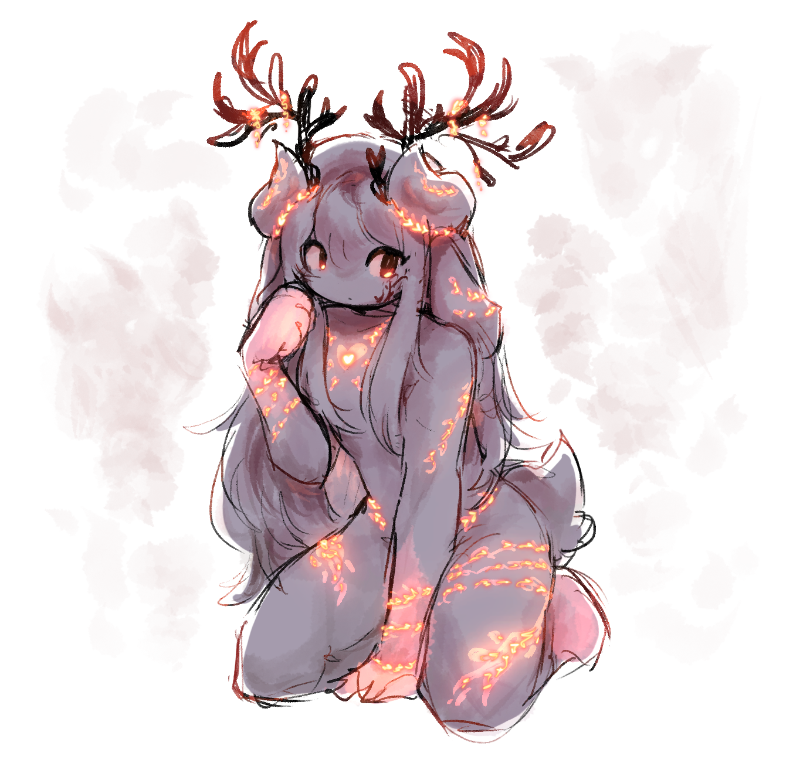
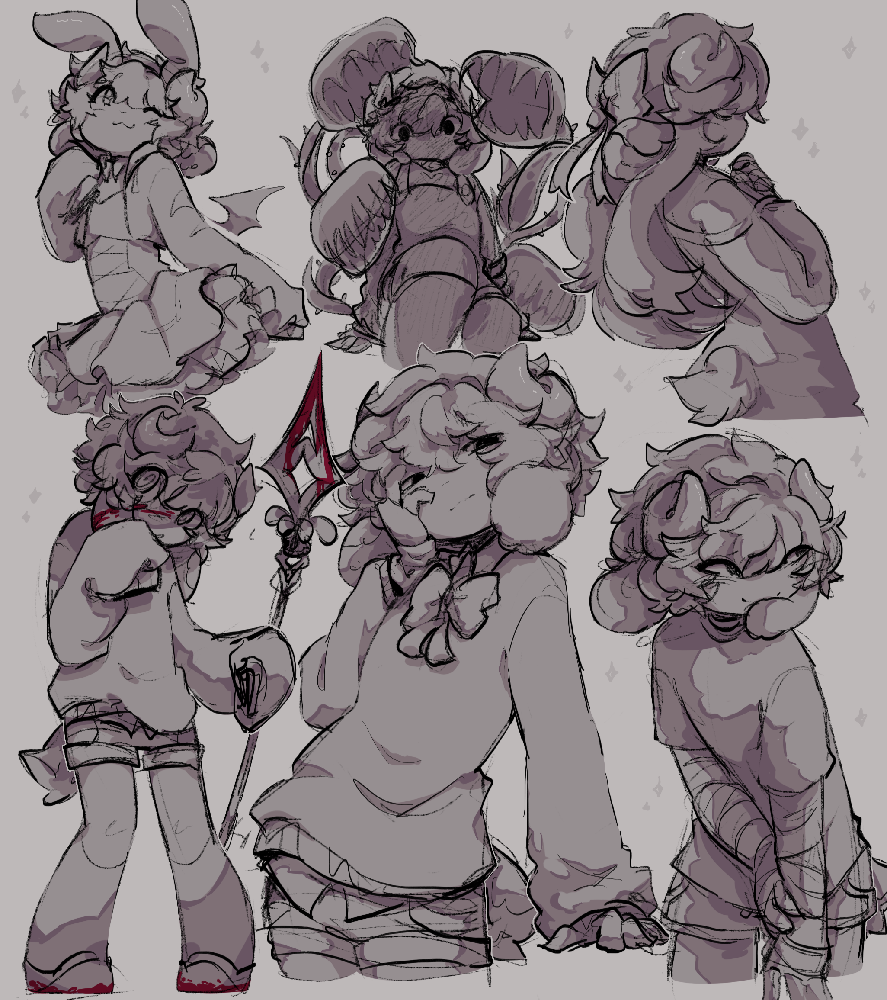
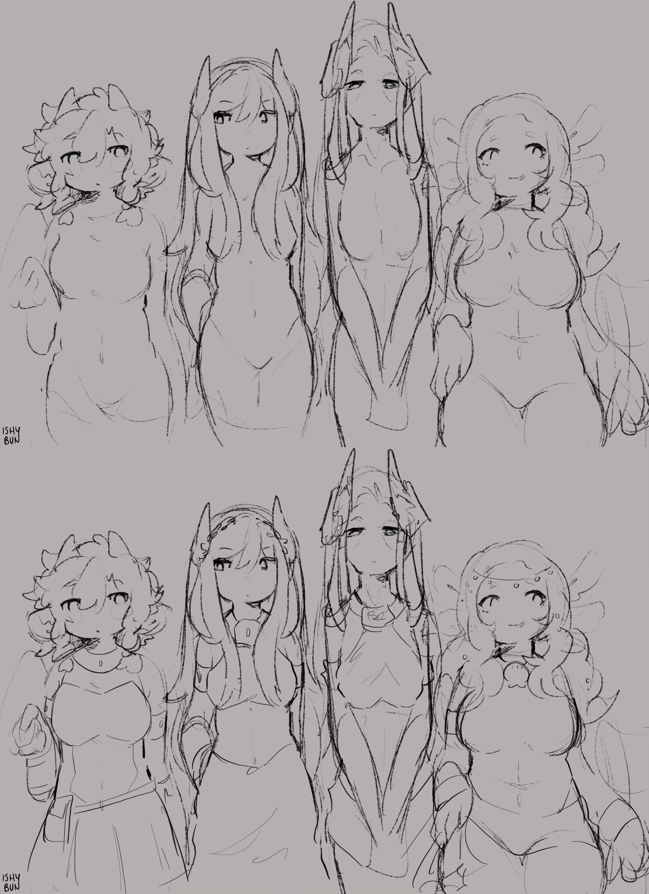
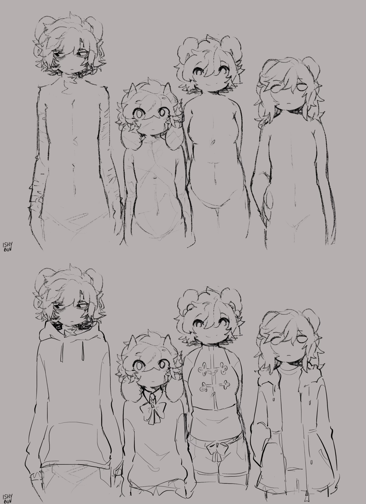
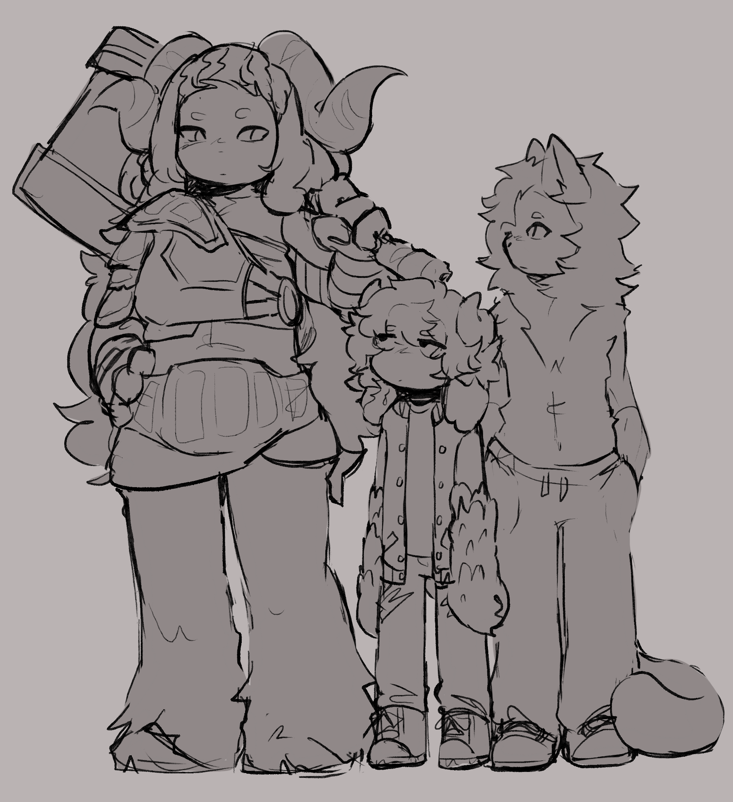
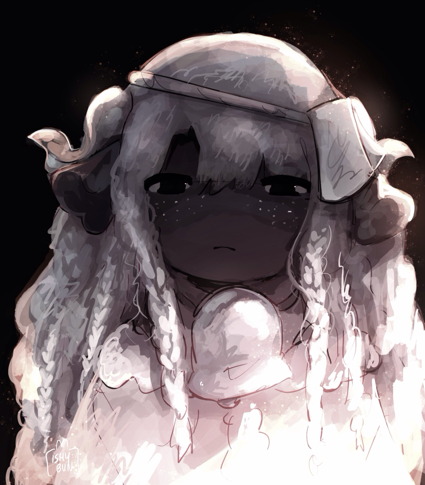
Personal projects:
I spend time on drawing every single day. A day without being able to draw is a day I might as well have been dead. I teach myself all sorts of things, like making VTube models, drawing backgrounds, animation, different styles, animatics, painting, and so forth.
Drawing is incredibly important to me, as it's one of my only ways to truthfully express myself, and to process my emotions and my experiences. The more mediums I can get proficient in, the better I can express myself, and maybe, eventually, I can finally allow my mind to be at peace.
Animation reel:
Anyway, there are a ton of different things I would love to show. I will do my best to pick some different kinds of work.
Firstly, let me link my animation reel! I've taught myself how to do all of this, whether it's through YouTube videos or trial and error. Mostly trial and error. I rarely ever do studies, but a few can be found in there, such as the sketched running cycle.
(P.S. feel free to look at my other videos! There are full speedpaints and animations!)
Products:
Secondly, I'll share some pieces of mine. I don't like sticking to one single style, which makes it a little difficult to make a choice. I will share a handful of works that might be interesting and reflect my ambitions. (Image 2) Here is my bag. Pictured on it are a few keychains, buttons, and one traditionally drawn badge. All of these were designed by me, aside for the lower button.
I worked with a company called Vograce that makes all sorts of personalized merch, and so I was able to get my hands on keychains of my own characters.
I've worked with them a few times by now and have even sold some of the keychains or gave them away as gifts. It's a fun process, and I'm willing to try more of their products in the future.
Studies:
As mentioned before, I don't do that many studies. However, there are a few. I'd love to show those. (Image 3)(Image 4)(Image 5)(Image 6)(Image 7)
These images show different kinds of anatomy, body and posing practice I have done. I tried to exaggerate body types a little to make the characters more distinguishable. It's necessary practice to avoid falling into drawing the same body type over and over. Whenever I do a study like that, I find my art to be better afterwards.
(Image 8) Here is a recent painting practice piece. My focus was on strong lighting and drawing a lot of small braids in a fast and efficient way. In total, this took about an hour to make, which I think is fine. It was fun to paint the braids.
(Image 9) Here is an attempt at style recreation. I chose to try and recreate the Hades style, a game I was playing at the time. I find the style amazing and creative, so I wanted to try my hand at it! It took a relatively long time, but I'm happy with the end result.
Want to see more? Feel free to check out my ToyHouse page for a huge collection of my art and characters :)


 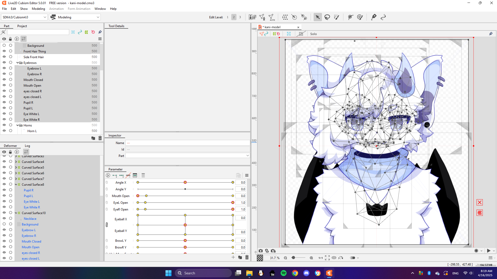
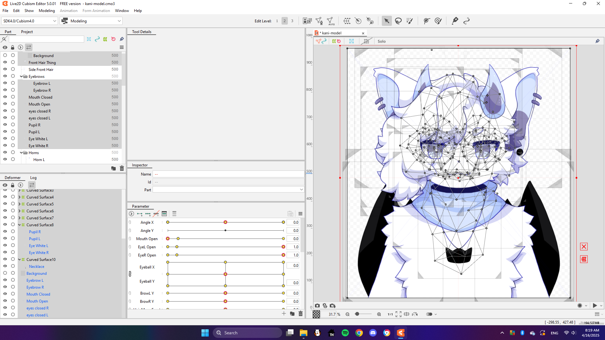